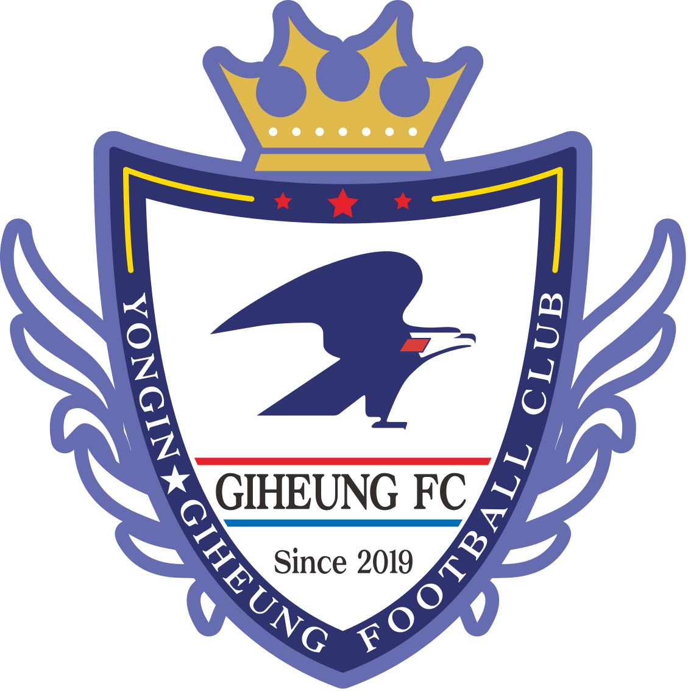
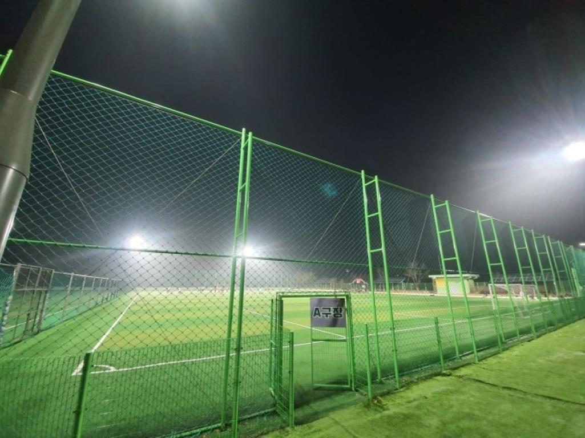
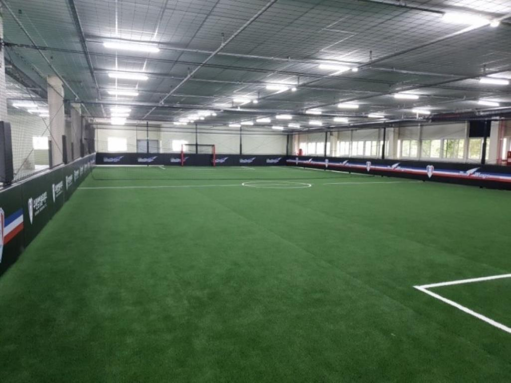
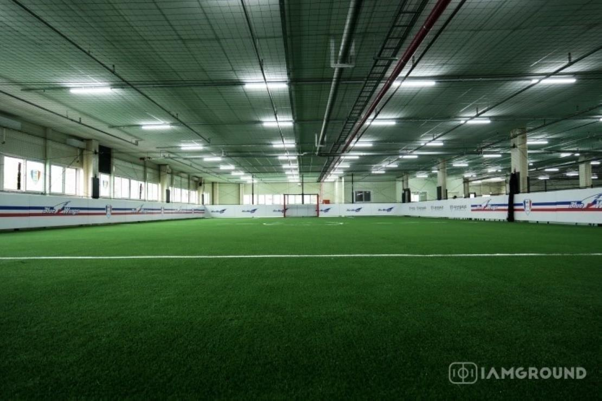

기흥FC
인사말
운영철학
지도자현황
훈련 및 팀레슨
고등부 진학현황
훈련장
차량운행노선
요일별 훈련복장
학부모님들께 전하는 당부사항
훈련장
야외구장 - 기흥 레스피아 축구장
(경기 용인시 기흥구 하갈로 79)

실내구장 - 기흥 실내센터[기흥 블루윙즈 축구클럽]
(경기 용인시 기흥구 공세로 236, 4층)

※ 훈련시간 : 매일 17:30 ~ 19:30(월~금요일, 주말간 대회 및 리그 참가시 변동가능함)